About Us
关于百年春
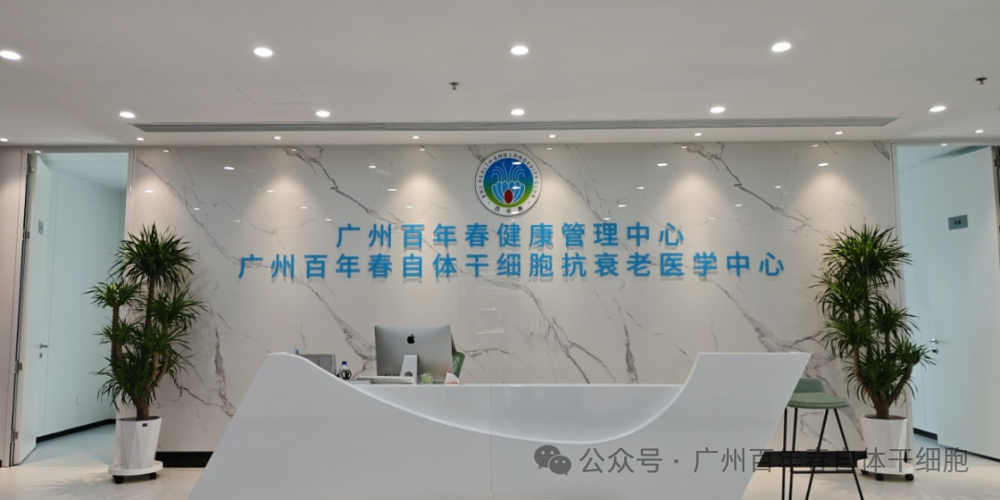
在医学的飞速发展中，总有一些案例闪烁着突破性的光芒，为我们指引着未来的方向。今天，我们要报道的，是林先生与百年春自体干细胞技术的一段真实故事，一段关于对抗病痛、重燃希望的征程。
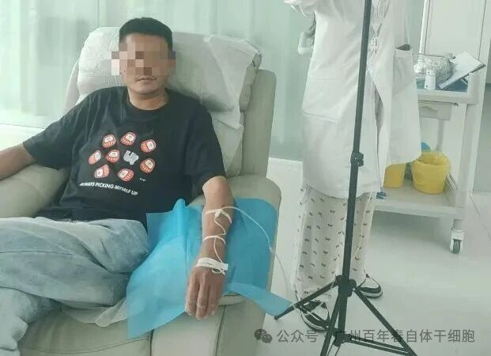
林先生，是一位与强直性脊柱炎（AS） 抗争了十几年的老战士。这种自身免疫性疾病，不仅让他常年忍受着关节的僵硬与疼痛，更带来了严重的并发症——糖尿病。雪上加霜的是，由于身体机能和免疫系统的紊乱，林先生全身出现了多处难以愈合的皮肤溃疡，每日的生活都充满了不便与痛苦。
他的病历上清晰地记录着：
人类白细胞抗原B27（HLA-B27）基因检测：阳性（这是强直性脊柱炎的重要关联指标
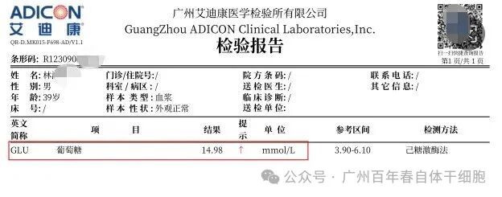
葡萄糖指标：14.98 mmol/L（远高于正常值，表明血糖控制极不理想）
这些冰冷的数据，勾勒出林先生多年来所面临的严峻健康困境。
01
选择新途：拥抱再生医学的曙光
在传统治疗方法效果有限或副作用难以承受的情况下，林先生及其家人经过深思熟虑，最终选择了百年春的自体干细胞修复方案。
为了让大家更好地理解林先生所接受的治疗，我们在此做一个简短的科普。
自体指的是来源是自己。我们从患者自身（如血液、脂肪等）采集种子细胞，在符合GMP标准的洁净实验室中进行分离、培养、扩增，获得足够数量的、充满活力的间充质干细胞。
间充质干细胞是成体干细胞的一种，它具有两大核心超能力：① 强大的免疫调节功能，能够像智能药厂一样，分泌多种因子，调节免疫系统的平衡，抑制过度的炎症反应；② 多向分化和组织修复潜能，能够趋化至损伤部位，分化成所需的细胞（如骨、软骨、脂肪细胞等），并促进血管新生，修复受损组织。
使用自身细胞，最大的优势在于无排异反应，安全性极高。相当于调动自身的再生修复兵团来精准地治疗自身的疾病，是一种非常个体化、精准化的生物治疗策略。
正是基于这一前沿技术，林先生踏上了他的修复之旅。
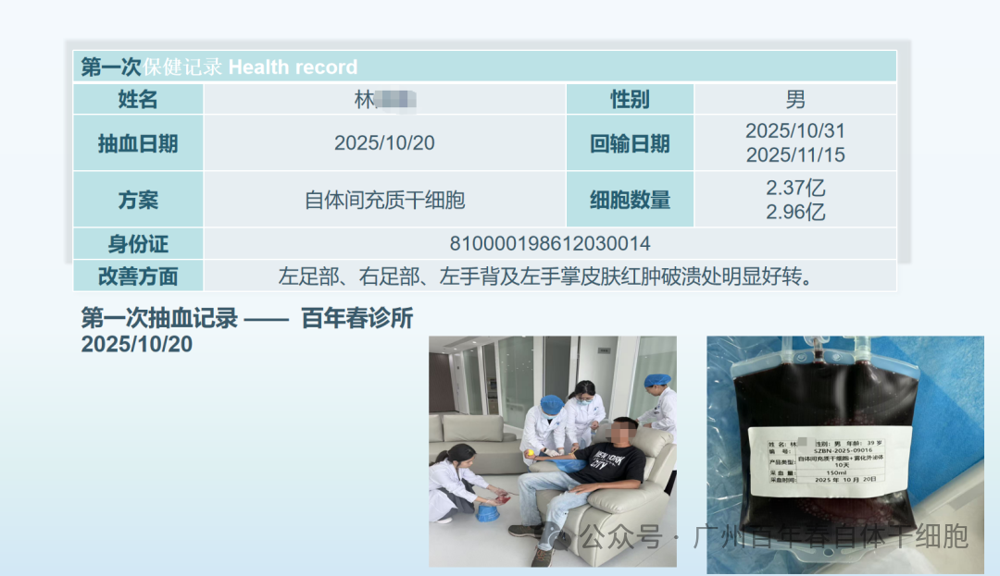
2025年10月20日，百年春医疗团队为林先生进行了血液采集，用于制备其专属的自体间充质干细胞。
2025年10月31日，林先生接受了第一次细胞回输，数量为2.37亿个自体间充质干细胞。
令人惊喜的转变，在回输后的几天内便开始显现。 林先生自述，他最为关切的指标之一——血糖，出现了明显的下降。这一早期积极信号，极大地增强了他和家人的信心。0
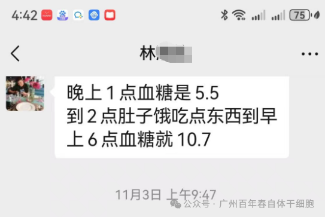
2
随着治疗的深入，更直观的改善接踵而至。
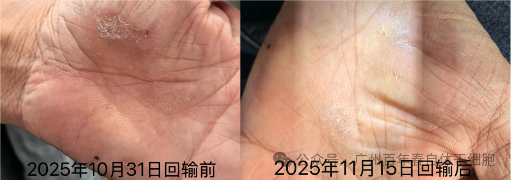
2025年11月15日，在准备进行第二次细胞回输（2.96亿个细胞） 之前，医疗团队拍摄记录下了林先生皮肤溃疡的变化——原来长期溃烂的创面，已经开始结痂、愈合！
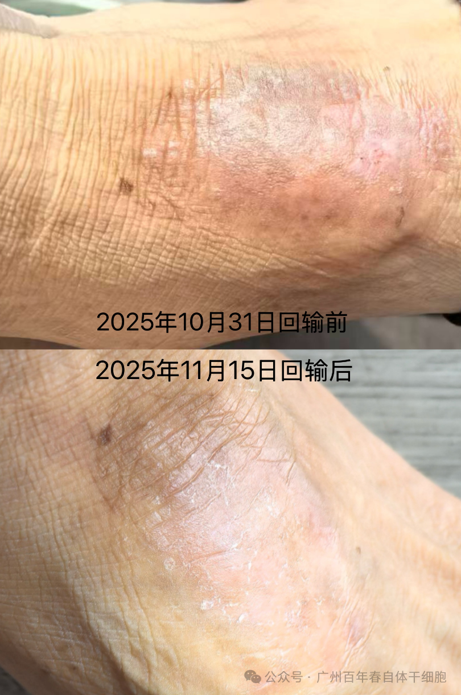
这是半个月治疗以来最直观、最有力的证据。自体干细胞回输后，仿佛为林先生的身体注入了强大的“修复兵团”。它们通过归巢效应，定向迁移至损伤部位，一方面调节紊乱的免疫系统，减少对自身组织的攻击，这可能是血糖改善的原因；另一方面促进组织再生，从而实现了皮肤溃疡的有效修复。
核心原理：百年春自体干细胞通过提取客户外周血中的单个核细胞逆转成自体干细胞，经过７到12天的制备时间，150ＭＬ血液一代逆转２－４亿自体干细胞再回输。就像从自家果园里摘下优质种子，在实验室的恒温大棚里培养增殖，等长出足够多的健康幼苗后，再输回患者体内。这些万能细胞能精准定位身体里的破损区域——对强直患者，可通过抑制Th17细胞、促进Treg细胞扩增，重建免疫系统平衡，从根源抑制异常炎症；对糖尿病患者，既能修复胰岛功能，又能为溃疡创面提供血管再生支持，像专业维修工一样修补受损组织，还能调节免疫系统的平衡开关”，让身体内部环境变得更宜居。
用的是自己的干细胞，相当于用自家的材料修自家的房子，不会发生排斥反应，安全性拉满，治疗时能直接瞄准病灶，好比精准打击，比传统治疗的全面撒网更高效；对于强直、糖尿病并发症这类顽固难题，效果比传统治疗更突出，《河北医学》的研究显示，干细胞治疗组患者的疼痛和脊柱功能评分改善幅度，显著优于常规药物治疗组，就像给身体按下了加速康复键。
除了强直性脊柱炎、糖尿病并发症，还能用于骨关节损伤修复（比如膝盖磨损后的软骨修补）、神经系统疾病辅助治疗（比如脑梗后的神经通路重建）、慢性创面愈合（比如长期不愈的皮肤溃疡）等，为多种疑难病症提供了新的治疗方向。正如多项临床研究证实，干细胞疗法正从炎症抑制迈向免疫系统重塑与组织再生修复的新阶段，已在系统性红斑狼疮、类风湿关节炎等多种自身免疫病中展现出突破性疗效。
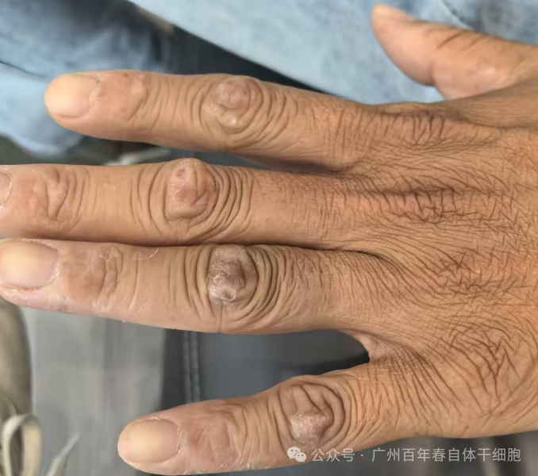
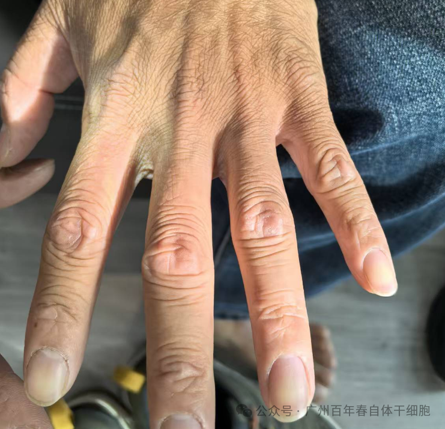
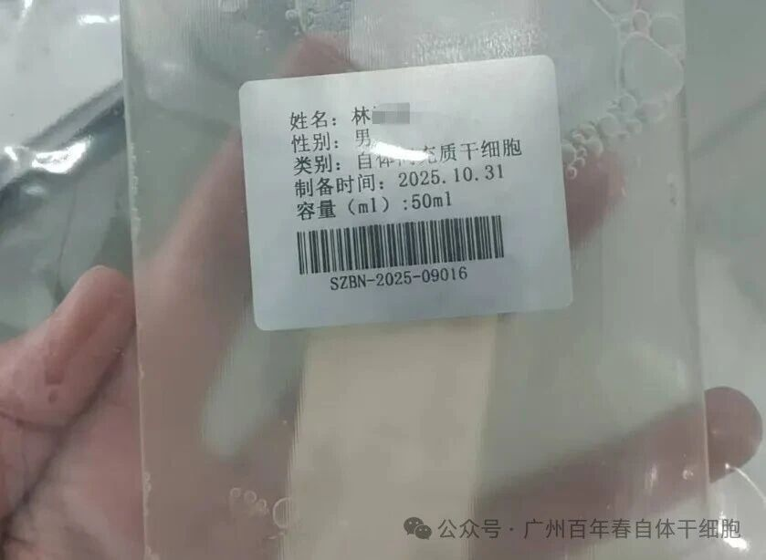
目前，林先生已经完成了两次干细胞回输，整体状况较治疗前有了显著好转。我们深知，对于强直性脊柱炎这样一种慢性复杂性疾病，康复之路仍需一步一个脚印。但林先生案例所展现出的积极趋势，无疑为同类病友带来了极大的鼓舞。
百年春自体干细胞修复技术，在此次针对强直性脊柱炎及并发症的实战中，初步展现了其作为前沿生物治疗手段的巨大潜力。我们将持续关注林先生的后续恢复情况，并期待他能迎来更加华丽的生命转变。
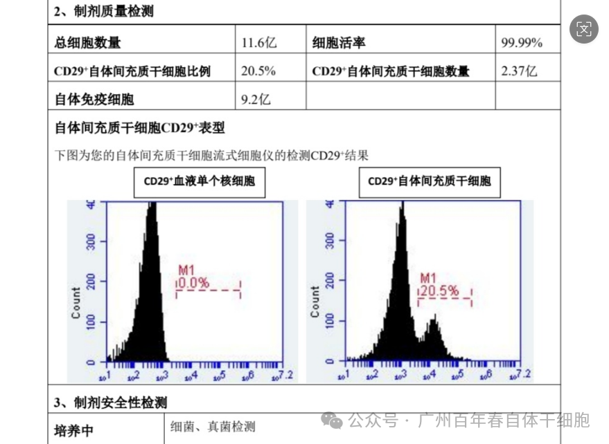
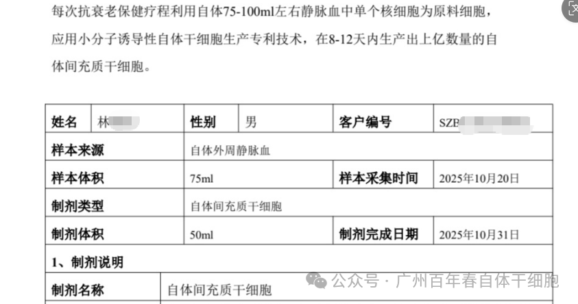
生命科学的发展，正不断将不可能变为可能。林先生的故事，是百年春在再生医学领域深耕的一个缩影，也是献给所有在病痛中坚守的人们的一束希望之光。我们相信，随着科研的持续深入和临床经验的不断积累，自体干细胞技术必将为更多家庭带来新生。
上一篇：
下一篇：
年后肝"负重"？百年春护肝美颜能量抗衰老针——给肝"松绑"，让脸发光！
2026-03-01
自体干细胞逆转高血脂，重启健康代谢！
2026-01-12
生殖干细胞
2025-12-10
强直性脊柱炎
2025-12-01
间充质干细胞
2025-11-14